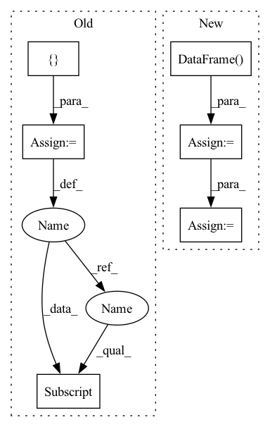

Pattern ID :37771
Before Change
if isinstance(df, pd.DataFrame):
checked_df = check_single_dataframe(df, check_y, covariates, regressors, events)
elif isinstance(df, dict):
checked_df = {}
for key, df_i in df.items():
checked_df[key] = check_single_dataframe(df_i, check_y, covariates, regressors, events)
else:
raise ValueError("Please insert valid df type (i.e. pd.DataFrame, dict)")
return checked_dfAfter Change
checked dataframe
df, _, _, _ = prep_or_copy_df(df)
checked_df = pd.DataFrame()
for df_name, df_i in df.groupby("ID"):
df_aux = check_single_dataframe(df_i, check_y, covariates, regressors, events).copy(deep=True)
df_aux["ID"] = df_name
checked_df = pd.concat((checked_df, df_aux), ignore_index=True)
return checked_df
In pattern: SUPERPATTERN
Frequency: 3
Non-data size: 6
Instances Fragment ID: 108399910
Project Name: ourownstory/neural_prophet
Commit Name: 7fcf23557cb5b30885a8a07387d411c61a50a05e
Time: 2022-06-21
Author: mgheorghecr@gmail.com
File Name: neuralprophet/df_utils.py
M Class Name: AnonimousClass
N Class Name: AnonimousClass
M Method Name: check_dataframe(5)
N Method Name: check_dataframe(5)
M Parent Class:
N Parent Class:
M File Name: neuralprophet/df_utils.py
N File Name: neuralprophet/df_utils.py
M Start Line: 504
M End Line: 512
N Start Line: 495
N End Line: 501
Before Change
label_field: np.zeros(len(uid2items) * tot_item_num, dtype=np.int64),
}
used_item_id = {}
new_inter_num = 0
pos_len_list = []
user_idx_list = []
for i, row in enumerate(uid2items.itertuples()):
uid = getattr(row, uid_field)
pos_item_id = getattr(row, iid_field)
pos_num = len(pos_item_id)
act_inter_num = i * tot_item_num
new_inter[uid_field][act_inter_num: act_inter_num + tot_item_num] = uid
new_inter[label_field][act_inter_num: act_inter_num + pos_num] = 1
used_item_id[uid] = self.sampler.used_item_id[self.phase][uid]
used_num = len(used_item_id[uid])
neg_num = tot_item_num - used_num
neg_end = new_inter_num + pos_num + neg_numAfter Change
user_idx_list.append(slice(new_inter_num, neg_end))
new_inter_num += pos_num + neg_num
users = pd.DataFrame( {uid_field: users})
users = self._dataframe_to_interaction(self.join(users))
return users, pos_idx, used_idx, pos_len_list, user_idx_list
Fragment ID: 108399908
Project Name: rucaibox/recbole
Commit Name: a137aa3d249a3246d7cbc1f748604ba4aec12a8f
Time: 2020-08-04
Author: houyupeng@ruc.edu.cn
File Name: data/dataloader.py
M Class Name: GeneralFullDataLoader
N Class Name: GeneralFullDataLoader
M Method Name: _neg_sampling(2)
N Method Name: _neg_sampling(2)
M Parent Class: GeneralGroupedDataLoader
N Parent Class: GeneralGroupedDataLoader
M File Name: data/dataloader.py
N File Name: data/dataloader.py
M Start Line: 335
M End Line: 368
N Start Line: 335
N End Line: 369
Before Change
if isinstance(df, pd.DataFrame):
checked_df = check_single_dataframe(df, check_y, covariates, regressors, events)
elif isinstance(df, dict):
checked_df = {}
for key, df_i in df.items():
checked_df[key] = check_single_dataframe(df_i, check_y, covariates, regressors, events)
else:
raise ValueError("Please insert valid df type (i.e. pd.DataFrame, dict)")
return checked_dfAfter Change
checked dataframe
df, _, _, _ = prep_or_copy_df(df)
checked_df = pd.DataFrame()
for df_name, df_i in df.groupby("ID"):
df_aux = check_single_dataframe(df_i, check_y, covariates, regressors, events).copy(deep=True)
df_aux["ID"] = df_name
checked_df = pd.concat((checked_df, df_aux), ignore_index=True)
return checked_df
Fragment ID: 108399907
Project Name: ourownstory/neural_prophet
Commit Name: 7fcf23557cb5b30885a8a07387d411c61a50a05e
Time: 2022-06-21
Author: mgheorghecr@gmail.com
File Name: neuralprophet/df_utils.py
M Class Name: AnonimousClass
N Class Name: AnonimousClass
M Method Name: check_dataframe(5)
N Method Name: check_dataframe(5)
M Parent Class:
N Parent Class:
M File Name: neuralprophet/df_utils.py
N File Name: neuralprophet/df_utils.py
M Start Line: 504
M End Line: 512
N Start Line: 495
N End Line: 501
Before Change
// Reassemble into dataframe
for i in range(len(data[0])):
row = {}
for _, col_name in enumerate(self.entity_columns):
row[col_name] = entity_id
for j, col_name in enumerate(self.context_columns):
row[col_name] = context[j]
for j, col_name in enumerate(self.data_columns):After Change
columns = self.entity_columns + self.context_columns + self.data_columns
groups = pd.DataFrame()
for entity_id in range(num_entities):
// Sample data, given resampled context
context = self._context.sample(1).iloc[0].tolist()
sequence = self.sample_sequence(context)
// Reformat as a DataFrame
group = pd.DataFrame(dict(zip(self.data_columns, sequence)), columns=columns)
group[self.entity_columns] = entity_id
group[self.context_columns] = context
groups = groups.append(group)
return groups
Fragment ID: 108399915
Project Name: sdv-dev/deepecho
Commit Name: 1e8ddefc8bf9828847c2deb06084e962a8870c45
Time: 2020-07-16
Author: carles@pythiac.com
File Name: deepecho/base.py
M Class Name: DeepEcho
N Class Name: DeepEcho
M Method Name: sample(2)
N Method Name: sample(2)
M Parent Class:
N Parent Class:
M File Name: deepecho/base.py
N File Name: deepecho/base.py
M Start Line: 168
M End Line: 187
N Start Line: 168
N End Line: 183